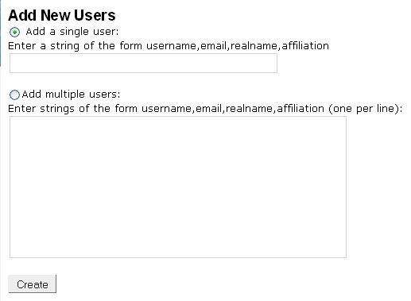
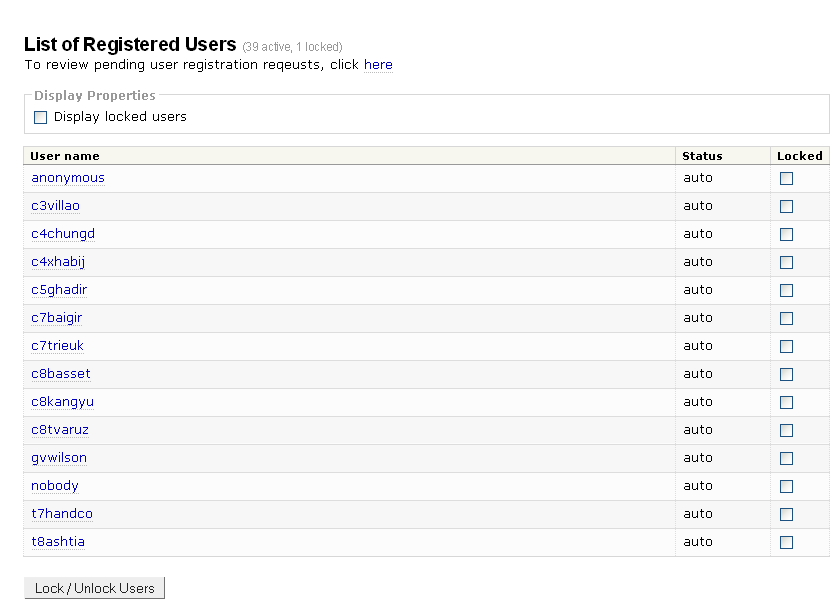
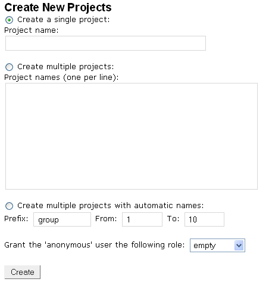
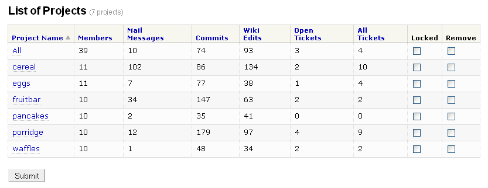
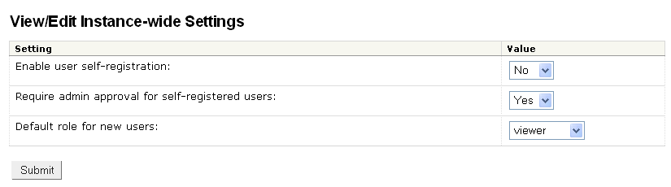

Rationalizing the Admin Interface
Anyone who has ever worked with me knows that I should not be allowed to design user interfaces. Nature, nurture—dunno why, but anything that I find intuitive and pleasing leaves most people queasy and confused.
Which is why I’m appealing for help. DrProject’s browser-based administration interface is invaluable, but we’re finding the workflow frustrating. For example, in order to add a new user, make her a member of the ‘All’ and ‘fribble’ projects, and turn on mail forwarding for her for both of those lists, I have to:
- Go to the 'add user' page.
- Fill in her user ID, default email address, real name, and affiliation.
- Submit.
- Go to the 'list users' page (the refreshed 'add users' page tells me her user ID has been added, but that ID isn't a hyperlink to a page where I can administer her information, and even if it was, what would I do if I was adding a bunch of people at once, which the 'add user' page also supports?).
- Scroll down to her ID.
- Click on it to bring up a page where I can edit her personal settings.
- Add her to the 'All' project as a 'viewer' and submit.
- Add her to the 'fribble' project as a 'developer' in the refreshed page and submit.
- Scroll down to the bottom of the refreshed page and tick off the boxes, turn on mail forwarding for her for 'All' and 'fribble', and submit.
Other tasks are similarly arduous. The screens in question are below the cut; if you have suggestions for redesign, I’d love to hear them.




